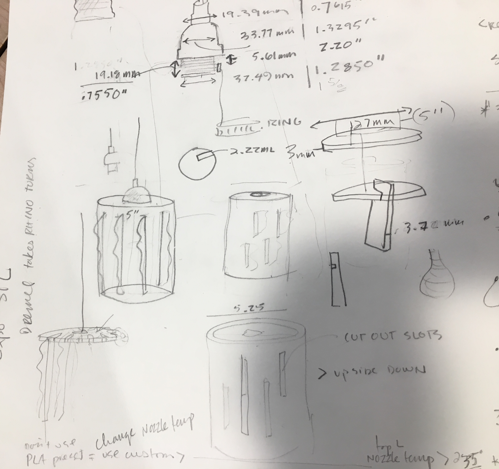
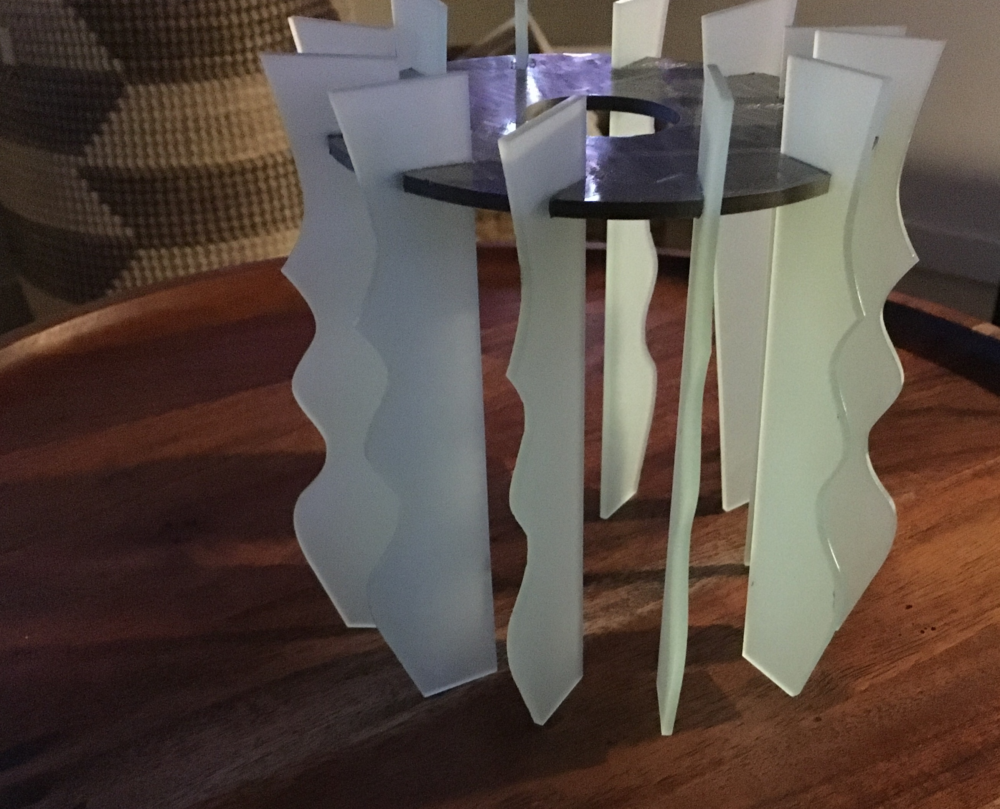
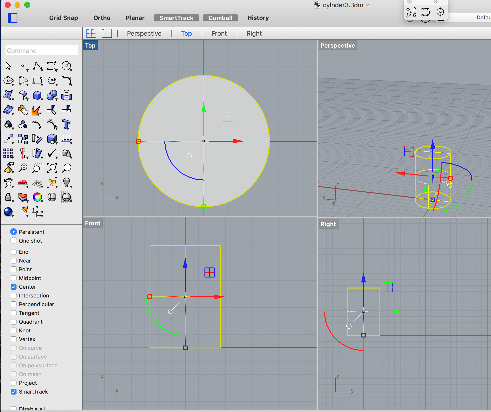
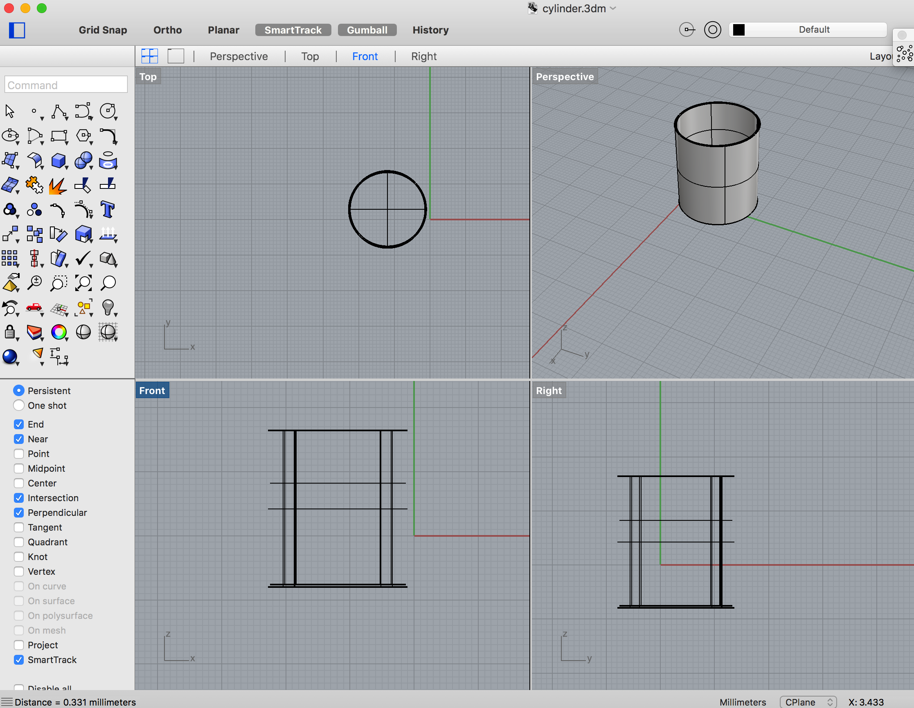
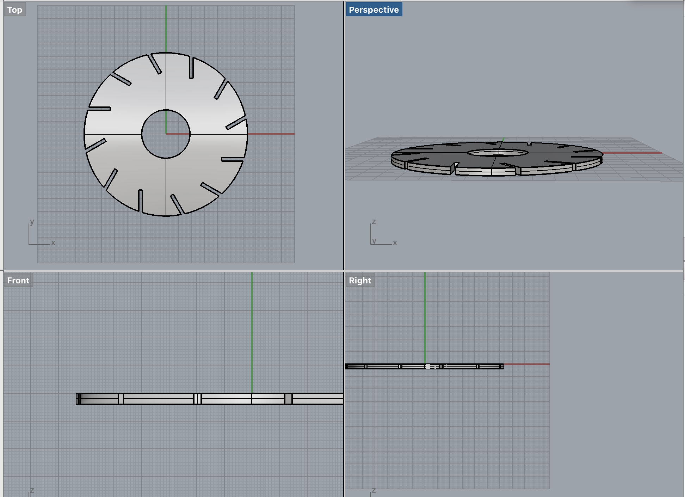
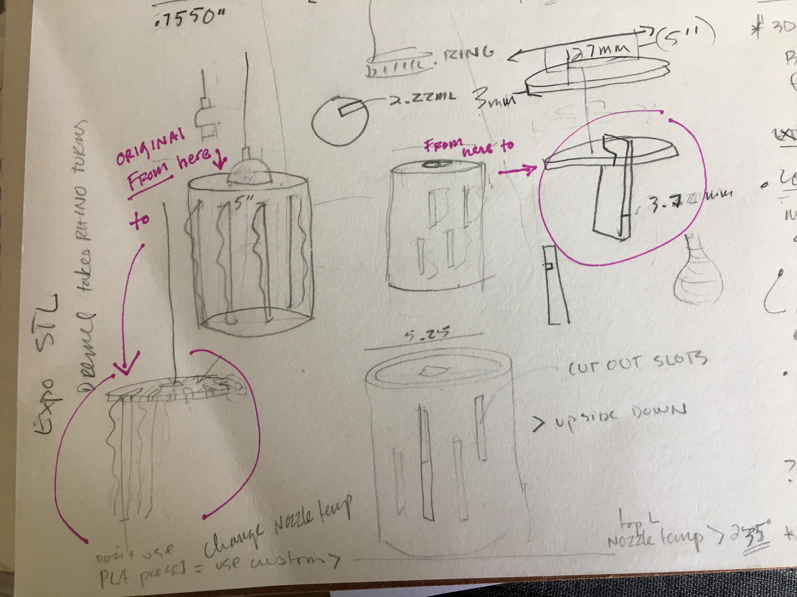
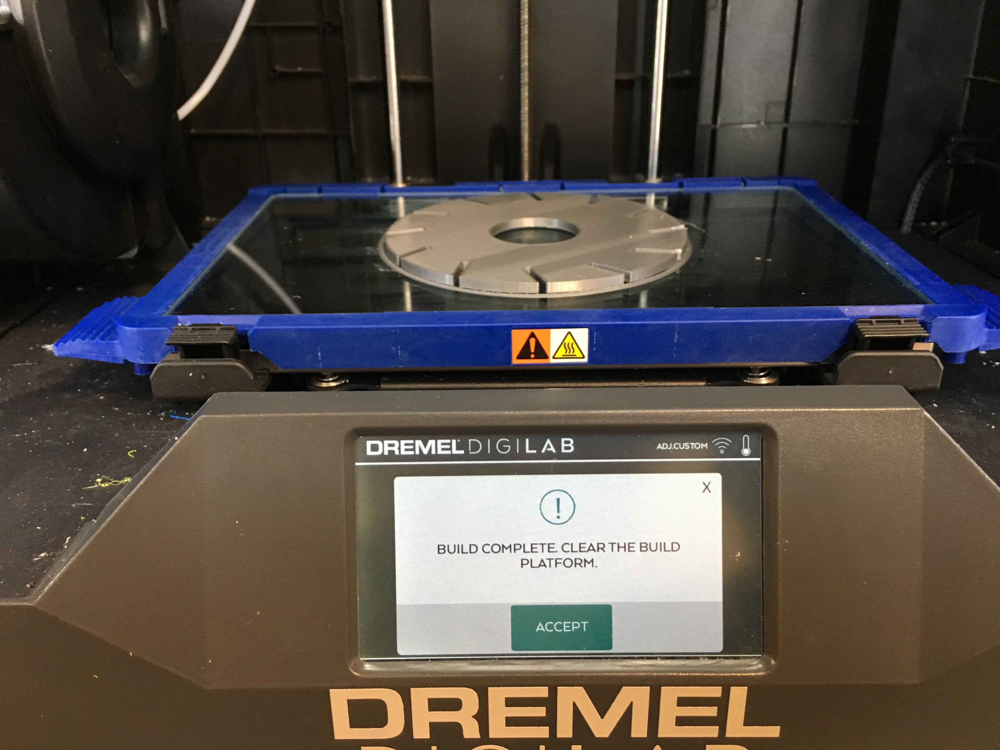
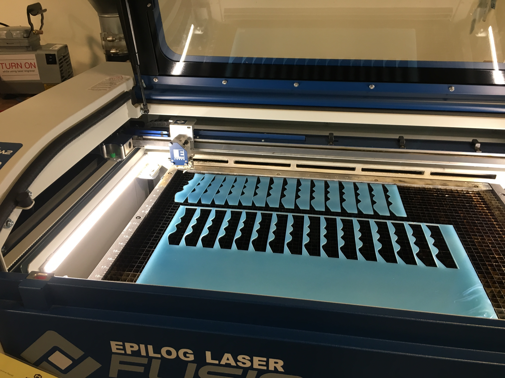
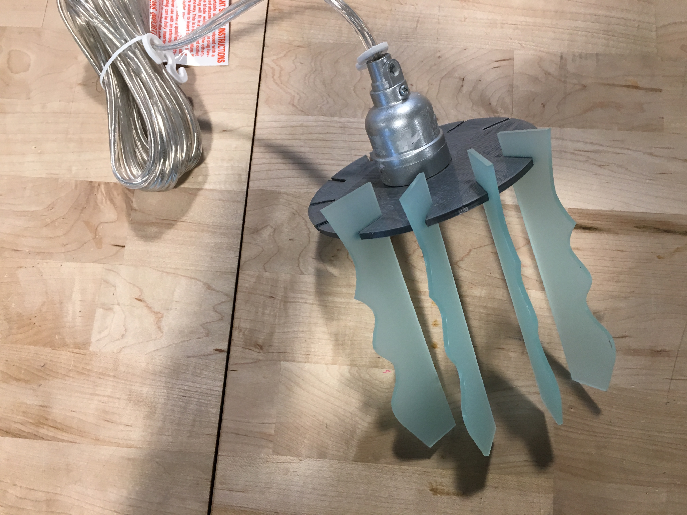

Lighting Creation : 3d + Laser Pieces
Native AI FileRhino File
 
I began sketching ideas for a lamp shade that could be affixed to the pendant style electrical component I found at World Cost Plus.
After taking all of the measurements I might need for fitting a shade on to the electrical componenet I started to create a shape in Rhino.
I began with a cylinder and then switched to a Circle geometry. I extruded the circle shape, capped it and then created a new identical shape
except it was slightly smaller, and used the smaller shape to delete the interior of my solid cylinder leaving a 3 dimensional can for the basis
of my lamp shade.

When I showed my shape to classmates at the Mill where I was working, they strongly advised I redesign my 3d solution to make it much smallerbecause they estimated my"can" shape would take 8 hours to print.I went back to my sketch pad and modified my design by removing the sides.
I created a new file in Rhino this time using the cylnder geometry to create a disc.

I opened my Rhino file in Dremel, to be read for 3d printing. It took 2.5 hours to print this disc/lamp component in
the 3d printer. ALARMING:It appeared the filament had seeped to make the apertures for inserting my laser pieces to narrow!
MEANWHILE I went shopping for material for the laser pieces of the lamp shade at the front desk.I chose a translucent blue
acrylic because it looked best with my gray filament color.
I designed the "shade" piecies in AI—omg So easy LOL.I put the file on the Mill computer and chose settings of 5/speed, 100
for both frequency/power.I tested before printing on a scrap.

The pieces dropped out with no effort,perfectly.
Now the scary part : Will the acrylic and filament components fit together???

With putting on some pressure and wiggling they did : YAY. NO WAY this will come apart! I also inserted the lighting element
which fit as intended.
Assembled before adding lighting component.

Assembled and lit-up
SHOUT OUT THANK YOU to colleague Andrew and the rest of the Monday afternoon crew who shared
as they learned which printers were unreliable and other tips.